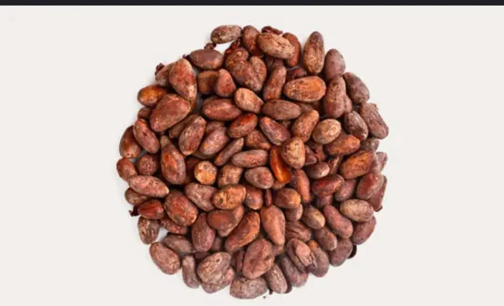
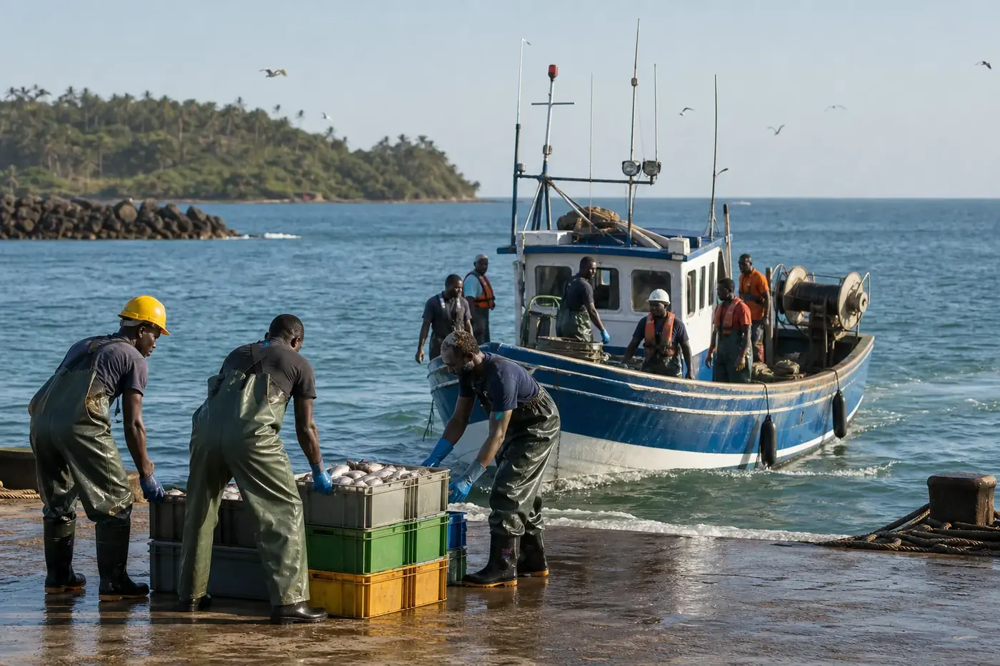
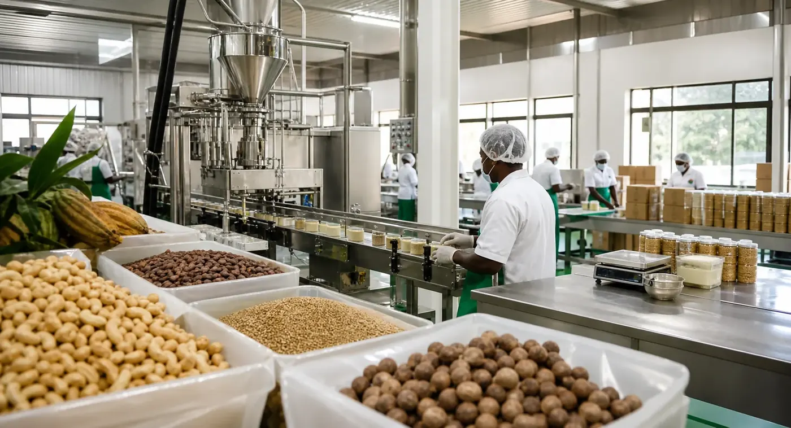

Pôles métiers
Agriculture, agro-industrie, BTP, mines et pêche réunis sous une même vision.

Vision & positionnement
Groupe Babia Guinée rassemble des activités complémentaires autour de l'agriculture, l'agro-industrie, la construction, les mines et la pêche, avec une même exigence : créer de la confiance et de la valeur durable.
Notre identité
Groupe Babia Guinée réunit cinq pôles complémentaires. L'agriculture connecte les filières et les marchés; l'agro-industrie valorise les matières premières; le BTP accompagne les infrastructures; les pôles minier et pêche développent des services et partenariats adaptés aux réalités du terrain.
Une gouvernance commune favorise la cohérence des engagements, la circulation des expertises et la construction de relations durables avec nos partenaires.
En un regard
Agriculture, agro-industrie, BTP, mines et pêche réunis sous une même vision.
Une connaissance des réalités économiques, logistiques et opérationnelles locales.
Une ambition tournée vers l'Afrique de l'Ouest et les partenaires internationaux.

Pêche
Groupe Babia développe son activité autour de l'approvisionnement, de la qualité, de la conservation et de la commercialisation des produits de la pêche.

Agro-industrie
Le pôle agro-industriel couvre la transformation, le contrôle qualité, le conditionnement et la préparation de produits adaptés aux marchés locaux, régionaux et internationaux.
Notre façon d'agir
Nous qualifions les attentes, le contexte, les volumes et les contraintes de chaque demande.
Chaque pôle construit une réponse adaptée aux exigences commerciales et opérationnelles.
Nous privilégions le suivi, la clarté des échanges et la continuité de la collaboration.
Contact
Notre équipe commerciale oriente chaque demande vers le pôle et l'interlocuteur appropriés.